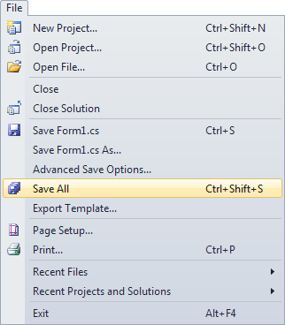
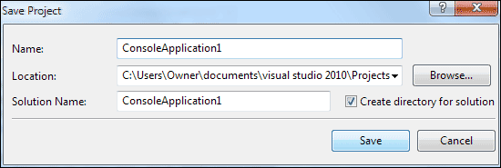
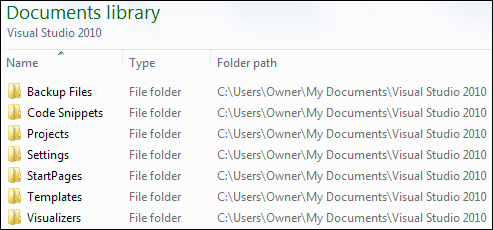
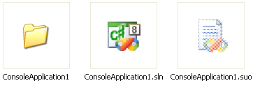
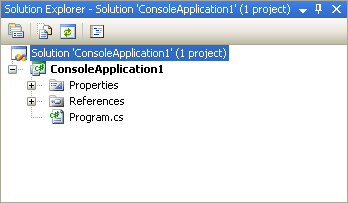
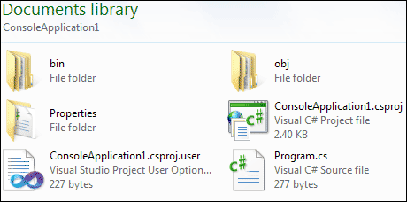
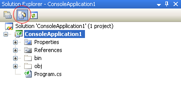
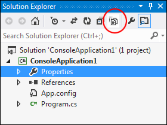
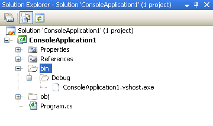

Saving your workin C# .NET
When you save your work, C# will create quite a few folders and files for you. Click File from the menu bar at the top of the Visual C# Express software, then Save All:

When you click Save All, you'll see the following dialogue box appear Visual Studio Express 2008 and 2010: (2012 users won't need to do anything here, as this above information was displayed when you created a new project earlier.)

You can type any name you like for your project. The default Name is ConsoleApplication1. Have a look at the location of the project, though:
C:\Users\Owner\documents\visual studio 2010\Projects
In XP, however, you'll see something like this:
C:\Documents and Settings\kayspc\My Documents\Visual Studio 2008\Projects
So it's going to be saved to the "documents" folder of this computer.
In the "documents" folder you'll find another one called Visual
Studio 2010. In this folder there will be one called Projects.
Before clicking the Save button, make sure there is a tick in the box for "Create directory for solution". Then click Save.
Now open up Windows Explorer (Hold down the Windows key on your keyboard, then press the letter "e"). Navigate to the folder location above. In the image below, we've used Windows Explorer to navigate to the Visual Studio 2010 folder:

Double click the Projects folder to see inside of it. Your should see a folder called ConsoleApplication1. Double click this folder and you'll see the following:

So there's another folder called ConsoleApplication1. There's also two files: one that ends in sln, and one that ends in suo. The sln file is the entire solution. Have a look at the Solution Explorer again:

The one highlighted in blue at the top refers to the sln file. The suo file contains information about the Visual Studio environment - whether the plus symbols are expanded in the Solution Explorer, what other files you have open in this project, and a whole host of other settings. (If you can't see the suo file click Tools > Folder Option in Windows Explorer. In Vista and Windows 7, you may have to click Organise > Layout > Menu Bar first. Click the View tab, and select the option for "Show hidden files and folders".)
Double click your ConsoleApplication1 folder, though, to see inside of it:

Now we have three more folders and two files. You can see the bin and obj folders in the Solution Explorer:

Click ConsoleApplication1, second from the top. Then click the icon for Show all Files, circled in red in the image above. To see All Files in version 2012, click the symbol circled in the image below:

The bin and obj folders will appear. Click the plus symobol or arrows to see what's inside of these folders:

The important one for us is the Debug folder under bin (there'll be an extra file ending in .manifest in c# 2010). You'll see why it's important in a moment. However, it's time to write some code!